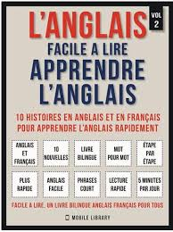

the British royal family brings together the people related to the British monarchy
learning the english language

people who come to settle in london to develop a new more pleasant lifestyle because the English are different from other countries
there are several cultures in London to discover as well as to visit as the Cradle of rock is the city that belongs to eternity to the Rolling Stones. Finally, London is also a temple for musical comedies, particularly in the West End
it is its duration that is judged the success of an English musical